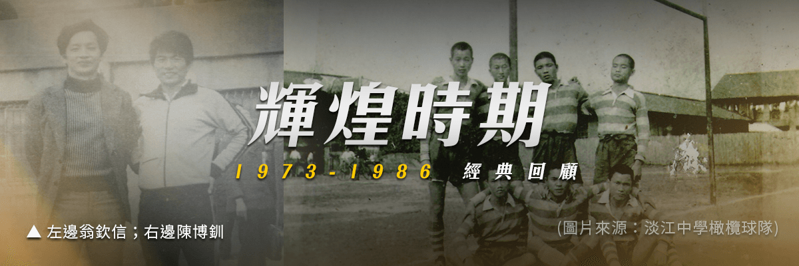
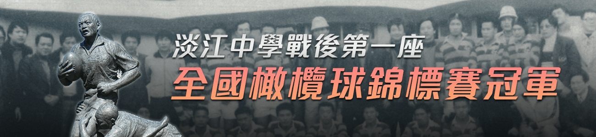
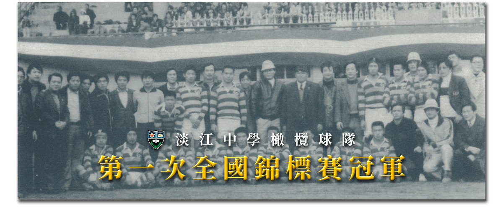
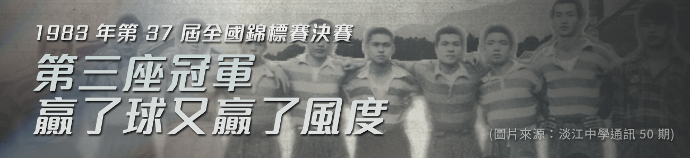
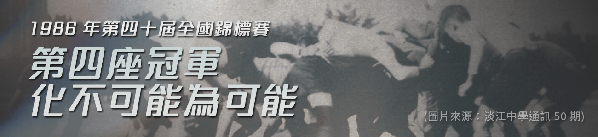

愈挫愈勇的奮戰期

1973 年，校友陳博釧回到淡江擔任教練，招募淡江學子們加入球隊，一起完成奪得全國錦標賽冠軍的使命。在一次比賽敗給長榮中學後，全員痛定思痛，更加努力訓練，隔年（1974 年 12 月）再度對上長榮中學，終場以 4 比 0 獲得勝利，然而卻在冠軍賽時輸給六信商職。與冠軍獎盃失之交臂後，在師長的關懷與校友的精神勉勵下，球員再度振作，之後陸續參與市長盃、縣長盃、清忠盃等賽事，都榮獲佳績，開啟了淡江球隊戰績輝煌的時期。
淡江中學戰後第一座全國橄欖球錦標賽冠軍

第 31 屆全國錦標賽前，淡江中學橄欖球隊幾乎贏了所有大小獎盃，就差全國錦標賽的冠軍盃。憑藉著強大的優勢，果然在同年拿下期盼了30年的「冠軍盃」。

遠赴泰國參加亞洲盃橄欖球賽
1980 年到泰國曼谷比賽，由於體能與球隊素質差異過大，淡江中學橄欖球隊被徹底的震撼，幾場球賽過後，恍若經歷一場災難。再經過兩年的沉潛，1982 年再度遠赴泰國比賽，利用訓練已久的 Scrum（鬥牛），每場都以大比數的分差贏得比賽，震驚了在泰國參與賽事的橄欖球隊伍。
第三座冠軍，抽籤勝，贏了球又贏了風度

1983 年，第 37 屆全國錦標賽決賽，遇到臺南勁旅六信隊，終場哨音吹響後兩隊仍僵持不下，延長賽亦不分高下，最後以抽籤方式決定勝負。陳博釧教練在抽籤前特別交代： 「若抽籤贏了，不能高興到跳起來，我們只是運氣贏了，球技並沒有贏。」 果然，抽籤贏了比賽後，淡江球員仍有風度且誠摯地安慰隊手。而這次的勝利，是淡江中學橄欖球隊的第三次冠軍。
第四座冠軍，化不可能為可能

1986 年 1 月，第四十屆橄欖球全國錦標賽，第一場比賽遇到當時正值青黃不接的六信，下半場的時候雙方發生大規模衝突，這種大規模群架是臺灣橄欖球史上首見。事後請王逸石長老集合淡江人一起禱告，再繼續比賽，最後淡江獲勝。1 月 16 日與長榮中學爭奪冠軍，原本淡江領先，驚險的是最後十分鐘時，竟然落後七分，但最後淡江還是化不可能為可能，贏得勝利。